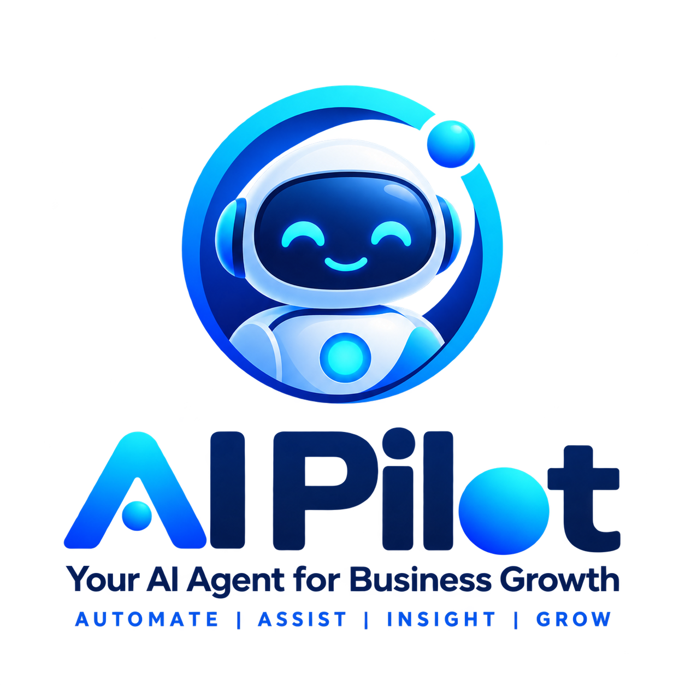
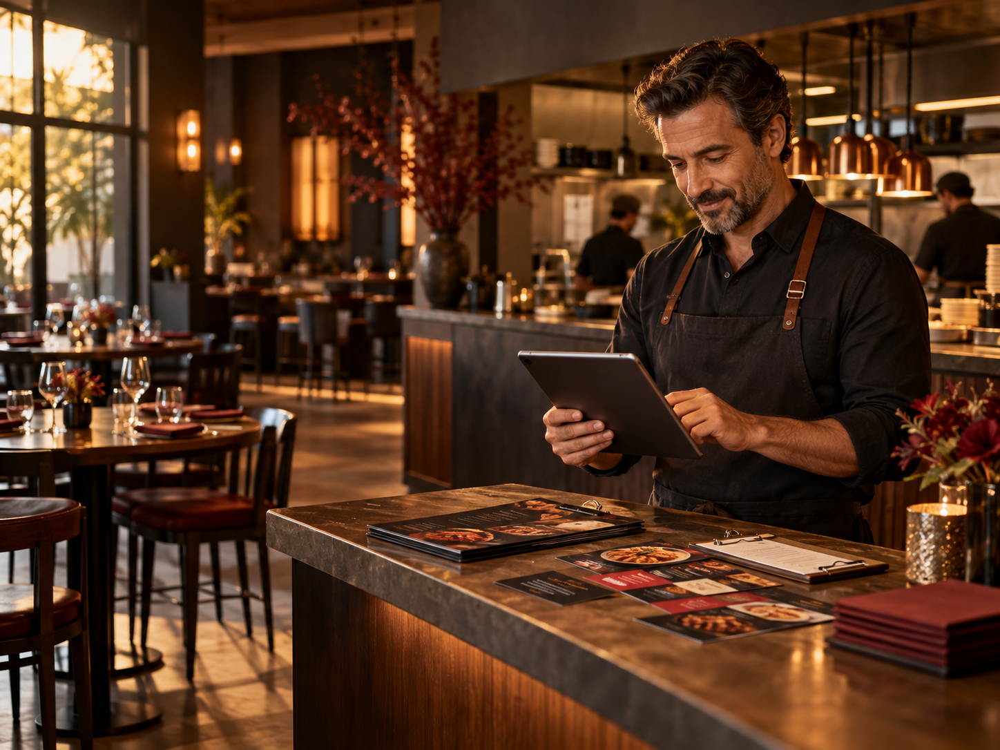

We learn the route
We map the repetitive task, your tools, and the result your business needs.

Your AI agent for business growth
We build and operate AI agents that turn repetitive business work into simple, reliable automation.
Why we are called AI Pilot
Think of your business as an aircraft. You choose the destination and pay for the AI credits, just like fuel. AI Pilot builds the agent, flies the system, and keeps repetitive work moving.

The agent prepares the copy, organizes the visuals, schedules the posts, and repeats the workflow every week.
We connect the systems your team already uses, then build an agent that coordinates the work between them.
Tap to connect
AIYA turns disconnected steps into one accountable flow.
THE OLD WAY
WITH AI PILOT
We map the repetitive task, your tools, and the result your business needs.
Your AI agent is configured to handle the workflow using credits paid by your business.
AI Pilot runs and improves the automation while your team reviews the important decisions.
Your work. Your credits. Our pilot.